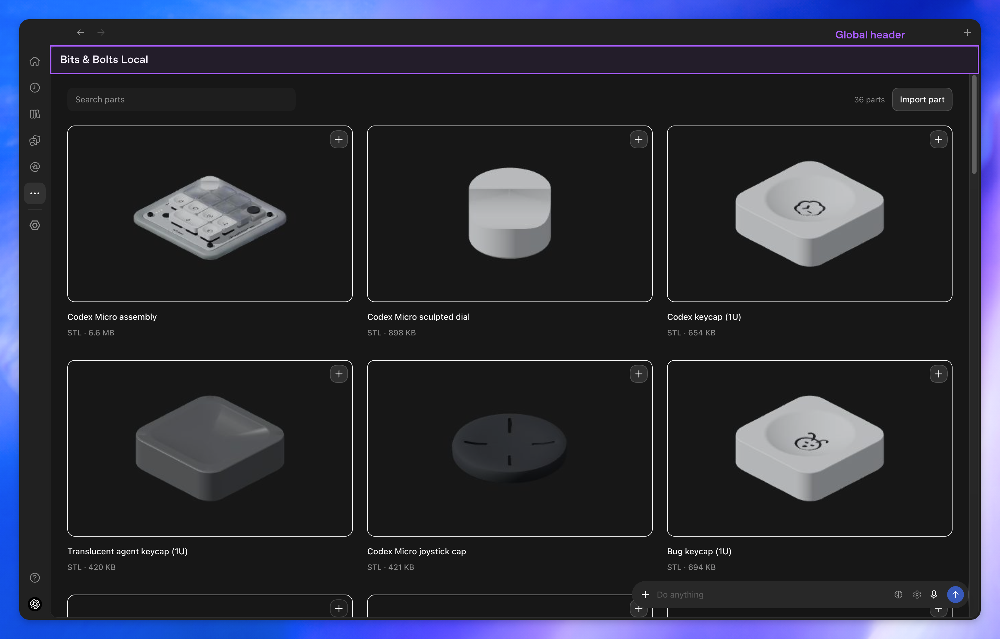
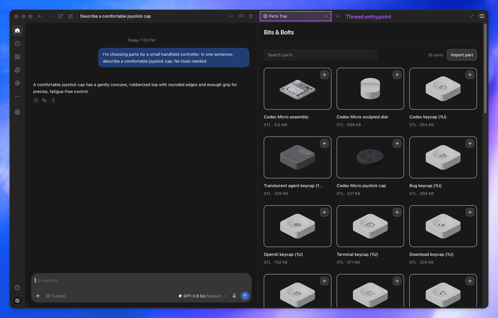
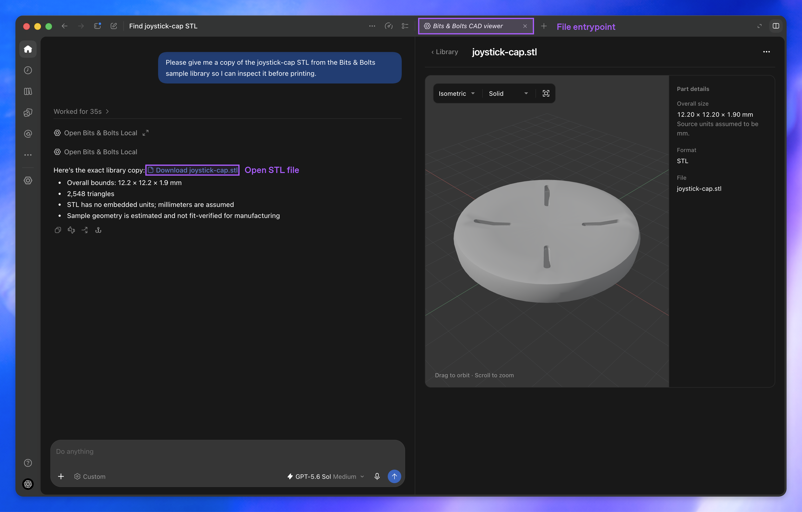
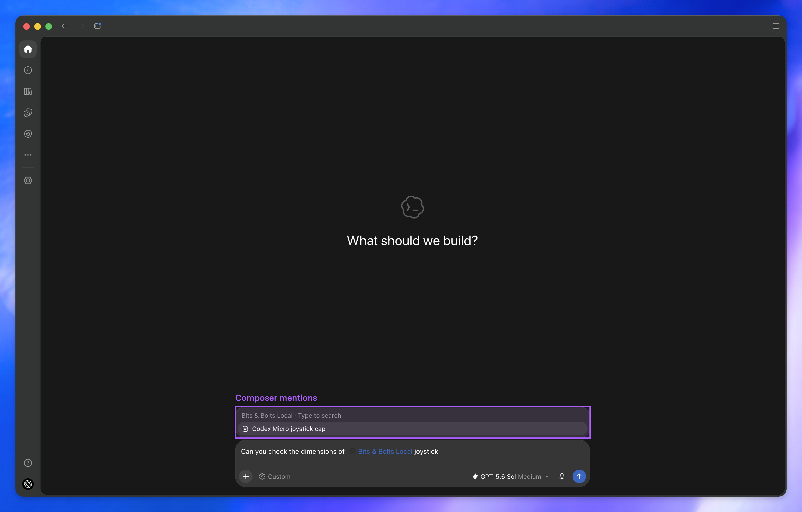
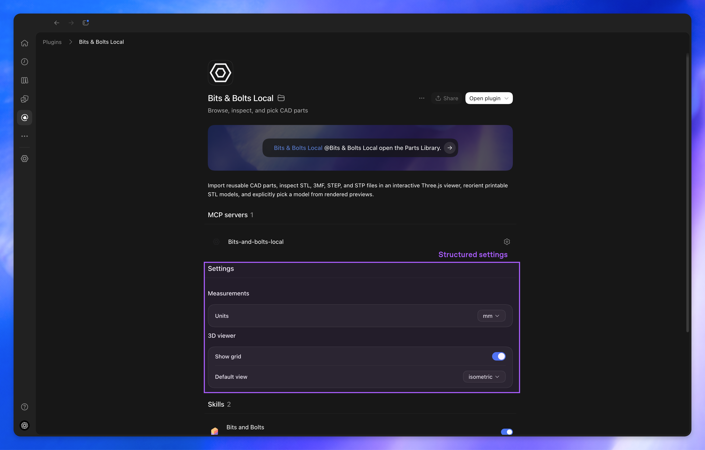
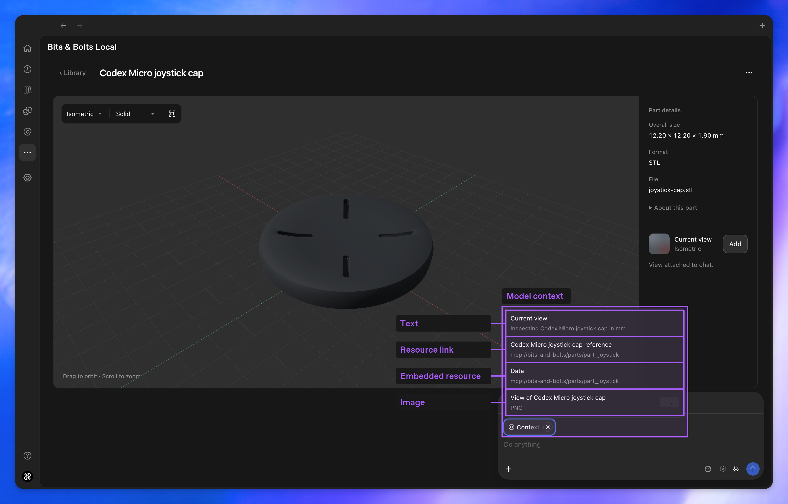
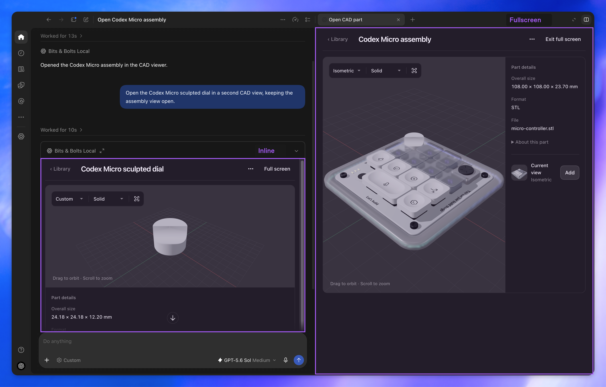
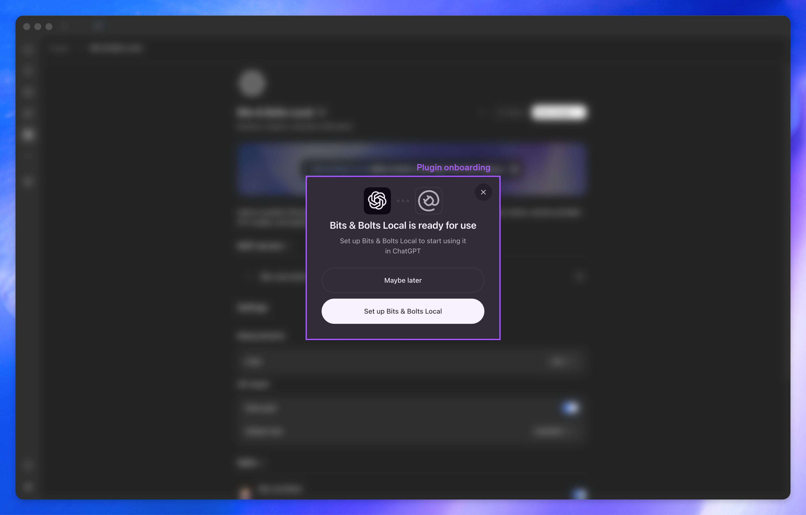
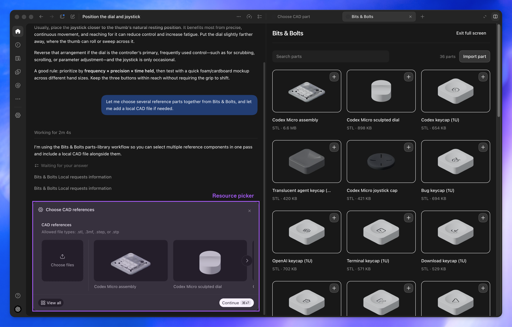

OFFICIAL REFERENCE · 1/9Global libraryNative icon rail, global title, full-area library and floating composer.Full resolution ↗
OFFICIAL REFERENCE · 2/9Parts Tray beside a chatNative content tab with close control; roughly equal chat/app columns and composer within the chat.Full resolution ↗
OFFICIAL REFERENCE · 3/9File viewerA file link in chat opens a named content tab beside the conversation.Full resolution ↗
OFFICIAL REFERENCE · 4/9Composer mention pickerSearch results sit directly above the composer; the selected plugin mention appears in its text.Full resolution ↗
OFFICIAL REFERENCE · 5/9Plugin settingsPlugin detail page, server row, grouped settings, right-aligned selectors and switches.Full resolution ↗
OFFICIAL REFERENCE · 6/9Context attachment popoverA removable Context chip reveals text, resource links, embedded data and image items.Full resolution ↗
OFFICIAL REFERENCE · 7/9Inline and fullscreenAn inline app card remains in chat while another app occupies the right content pane.Full resolution ↗
OFFICIAL REFERENCE · 8/9Onboarding dialogCentered dialog over a blurred plugin page; defer and setup actions.Full resolution ↗
OFFICIAL REFERENCE · 9/9Resource pickerA form card appears in the chat column while the app library remains visible beside it.Full resolution ↗